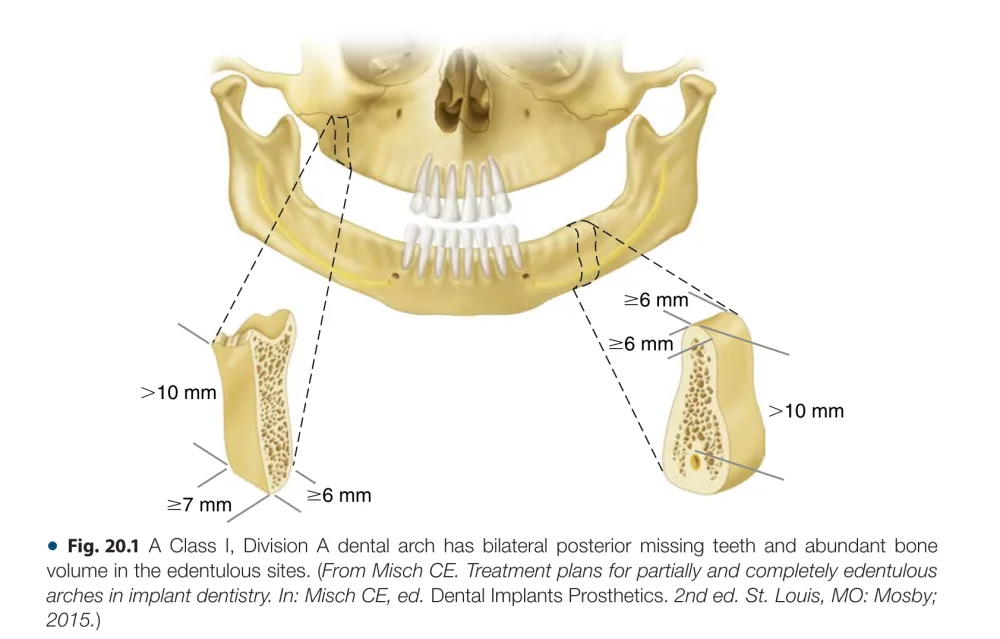
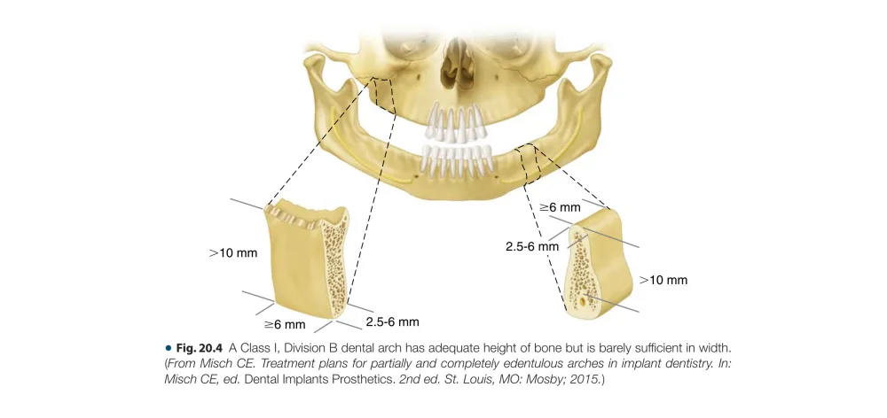

نسخه استخراجشده؛ ترجمه یا تأیید علمی انجام نشده است. وضعیت: captured
تا اینجا دو دستگاه طبقهبندی آموختهای که هرکدام یک بُعد را میسنجند:
• دیویژن A تا D (یونیت ۲٫۳) — چقدر استخوان هست
• موقعیتهای کلیدی (یونیت ۲٫۲) — کجا باید ایمپلنت باشد
این یونیت بُعد سوم را میافزاید:چه الگویی از دندانها غایب است. و مهمتر از آن، نشان میدهد که این سه بُعد چگونه در هم ضرب میشوند.
چهار کلاس بر پایهی طبقهبندی کندیـاپلگیت:
• کلاس I: دندانهای خلفی غایب در هر دو کوادرانت (دوطرفه)
• کلاس II: دندانهای خلفی غایب در یک کوادرانت — «بیماران بخشیبیدندان کلاس II کندیـاپلگیت دندانهای یک بخش خلفی را از دست دادهاند.»
• کلاس III: یک فضای بیدندان بیندندانی — یعنی فضایی که از هر دو سو دندان دارد
• کلاس IV: «فضای بیدندان قدامی از خط وسط عبور میکند.»
و اکنون گام اصلی این یونیت و اهمیتش را ببین:
هر یک از این چهار کلاس، با دیویژن استخوان ترکیب میشود. پس ترکیبهای کلاس × دیویژن به دست میآید:
کلاس I دیویژن A، کلاس I دیویژن B، کلاس I دیویژن C-h، کلاس II دیویژن A و به همین ترتیب.
چرا این ترکیب لازم است؟ چون همان دیویژن، در دو کلاس متفاوت، دو طرح درمان متفاوت میطلبد.
و یک نمونهی روشن:
«استئوپلاستی نمیتواند در بیمار کلاس I بهاندازهی بیمار کلاس IV یا کاملاً بیدندان — که ایمپلنتهایش عمدتاً در نواحی قدامی است — تهاجمی باشد، بهدلیل لندمارکهای آناتومیک مقابل (سینوس ماگزیلا یا کانال مندیبولار).»
این جمله را دو بار بخوان. در یونیت ۲٫۳ آموختی که استئوپلاستی میتواند دیویژن B را به A تبدیل کند — به شرطی که بیش از ۱۰ میلیمتر ارتفاع بماند.
حالا میبینی که این شرط در نواحی خلفی بسیار سختتر برآورده میشود، چون سینوس یا کانال از بالا و پایین فضا را میبندند. پس «دیویژن B» در ناحیهی قدامی و در ناحیهی خلفی، دو وضعیت متفاوتاند — حتی اگر عدد عرضشان یکسان باشد.
و همین است که این ترکیب را ضروری میکند: دیویژن به تو میگوید چقدر استخوان هست؛ کلاس به تو میگوید آن استخوان کجاست و چه چیزی محدودش میکند.
و ابعاد مرجع یک جایگاه دیویژن A در قوس کلاس I (شکل زیر):
• ارتفاع بیش از ۱۰ میلیمتر
• طول مزیوـدیستالی بیش از ۷ میلیمتر
• عرضی که ایمپلنت با قطر ۴ میلیمتر یا بیشتر را با دیوارهی استخوانی کافی در بر بگیرد
و این اعداد را از یونیت ۲٫۳ میشناسی — همانها که دیویژن A را تعریف میکردند. اینجا میبینی که چگونه روی یک قوس واقعی نقشه میشوند.

یک واقعیت را باید پذیرفت: «نگرانیهای مالی ممکن است مرحلهبندی درمان در طول سالها را ایجاب کند.»
و بهجای نادیده گرفتن آن، یک راهبرد روشن وجود دارد:
«ناحیهی خلفی با بیشترین حجم استخوان معمولاً نخست ترمیم میشود، اگر گرافت استخوان لازم نباشد.»
و دلیلش بیومکانیکی است: «به این ترتیب، ایمپلنتهایی با اندازه و سطح بیشتر میتوانند در برابر نیروهای خلفی یکطرفه مقاومت کنند در حالی که بیمار در انتظار درمان آینده است.»
به منطق این ترتیب دقت کن. شهود اولیه ممکن است بگوید «بدترین ناحیه را اول درست کن». ولی درست خلاف آن است: بهترین ناحیه را اول بساز، چون در دورهی انتظار، بیمار روی همان یک سمت خواهد جوید — و آن سمت باید قویترین پشتیبانی را داشته باشد.
و یک هشدار زمانی که هزینهی تأخیر را نشان میدهد:
«اگر سالهای زیادی پیش از جایگذاری ایمپلنت در استخوان کمحجمتر بگذرد، تحلیل ادامهیافته ممکن است پیش از بازسازی به افزایش استخوان نیاز پیدا کند.»
یعنی تأخیر، مسئله را از «ایمپلنت» به «گرافت و سپس ایمپلنت» تبدیل میکند — و این را باید هنگام مشاورهی مالی با بیمار در میان بگذاری. صبر کردن رایگان نیست.
و یک استثنای هوشمندانه در همین راهبرد:
«اگر هر دو بخش خلفی به گرافت استخوان نیاز داشته باشند، بیمار تشویق میشود که هر دو بخش خلفی را همزمان افزایش دهد.»
و دلیلش عملی و انسانی است: «به این ترتیب، بخش اتولوگ گرافت میتواند برداشت شود و میان هر دو ناحیهی خلفی توزیع شود، که شمار اپیزودهای جراحی را برای بیمار کاهش میدهد.»
پس قاعدهی مرحلهبندی دو شاخه دارد:
• اگر گرافت لازم نیست ← مرحلهبندی کن و از بهترین ناحیه شروع کن
• اگر هر دو سمت گرافت میخواهند ← همزمان انجام بده تا یک بار برداشت اتولوگ کافی باشد
و این تفاوت، تصمیمی است که فقط با نگاه به کل قوس گرفته میشود — نه با نگاه به یک جایگاه. و همین، دلیل وجود این یونیت است.
و یک قاعدهی عمومی که در کلاسهای مختلف تکرار میشود:
دربارهی ایمپلنتهای باریک: «اگر ایمپلنتهای ریشهای با قطر باریک به کار روند، شمار بیشتری نسبت به ریج دیویژن A اندیکاسیون دارد، و استفاده از یک ایمپلنت برای هر ریشهی دندان غایب بدون هیچ کانتیلوری توصیه میشود.»
سه شرط در این یک جمله هست: شمار بیشتر، یک ایمپلنت برای هر ریشه، و بدون هیچ کانتیلوری.
و قید آخر مهمترین است. از یونیت ۲٫۲ میدانی که کانتیلور بار را تشدید میکند؛ و از یونیت ۲٫۳ میدانی که ایمپلنت باریک در بار جانبی تقریباً سه برابر استرس بیشتری میگیرد. ترکیب این دو، غیرقابل قبول است.
